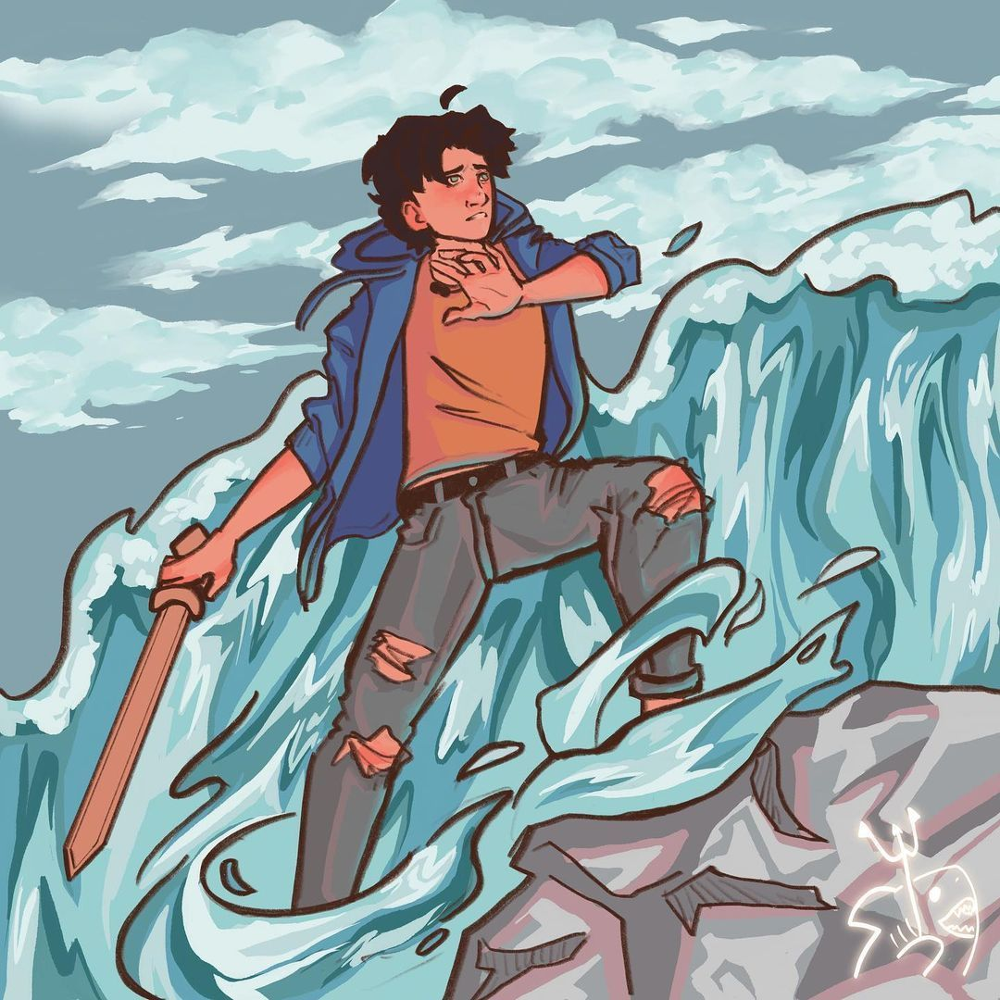
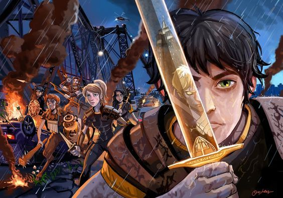

Bienvenido/a al mundo de Percy Jackson
Tres pilares de esta épica saga de mitología moderna

Percy es un semidiós de 12 años que descubre ser hijo del dios del mar. Con su espada Contracorriente (hecha de bronce celestial) y sus poderes sobre el agua, enfrenta monstruos mitológicos, titanes y hasta los mismos dioses. Es leal, impulsivo y tiene un increíble sentido del humor. Sufre de dislexia y TDAH, lo que en el mundo de los semidioses significa que su cerebro está "programado" para leer griego antiguo y reaccionar rápido en batalla.
Poderes: Control del agua, comunicación con caballos, respiración bajo el agua, crear huracanes pequeños, crear maremotos y terremotos, resitencia limitada al fuego.
Ubicado en Long Island, Nueva York, este campamento está protegido por un árbol mágico (Thalia) que lo oculta de los mortales y monstruos. Allí los semidioses entrenan en lucha con espada, tiro con arco, carreras de cuadrigas y aprenden sobre mitología griega. Se dividen en cabañas según su padre/madre divino: Atenea, Ares, Hermes, Poseidón, etc. El director es el centauro Quirón y la actividad favorita es el capturar la bandera con poderes incluidos.
Canción no oficial: "Riptide" de Vance Joy. La espada de Percy se llama igual a la canción en su versión inglés "Riptide" fue traducido al español a "Contracorriente", además que la canción fue utilizada en la promoción del tráiler de la adaptación de los libros en live action por la plataforma de streaming Disney+ en 2023

Una antigua profecía que predice el futuro de un semidiós de los tres grandes dioses (Zeus, Poseidón, Hades). Dice así:
"De los dioses más antiguos, un mestizo llegará a los dieciséis en contra de todo lo predicho.
En un sueño sin fin, el mundo se verá sumido, el alma del héroe, una hoja maldita habrá seguido.
Una sola opción habrá de sellar, el Olimpo habrá de salvar o arrasar."
Percy es quien la cumple en "El último héroe del Olimpo" (Último libro de la saga principal), enfrentándose a Cronos y decidiendo el destino de los dioses.